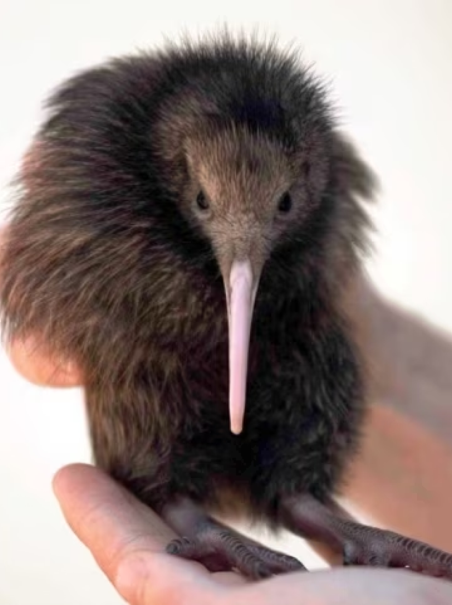
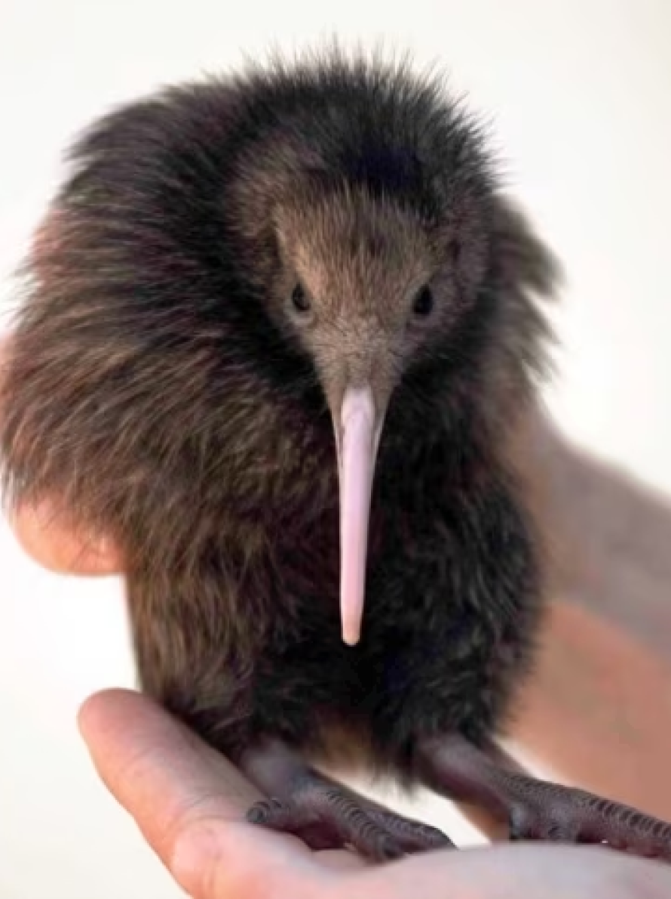

The word "kiwi" often brings to mind the image of something small, brown,fuzzy, and found in the produce section of your local supermarket. But the kiwi is not a fruit—that's kiwifruit, which is native to eastern Asia! About the size of a chicken, the kiwi is a small, flightless, and nearly wingless bird found only in New Zealand.

 
